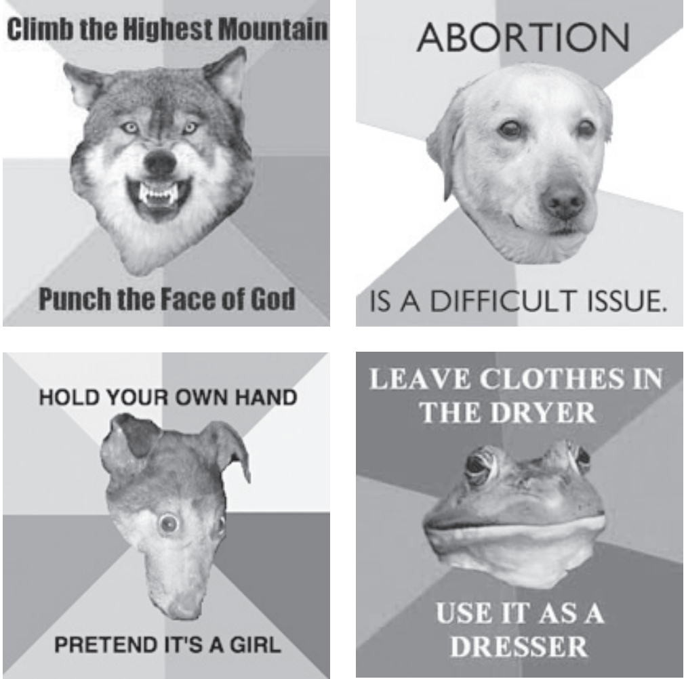
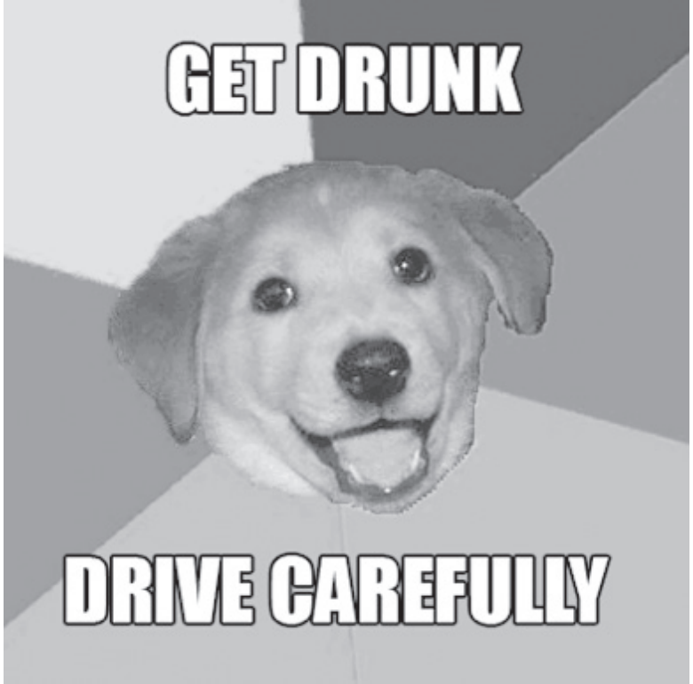
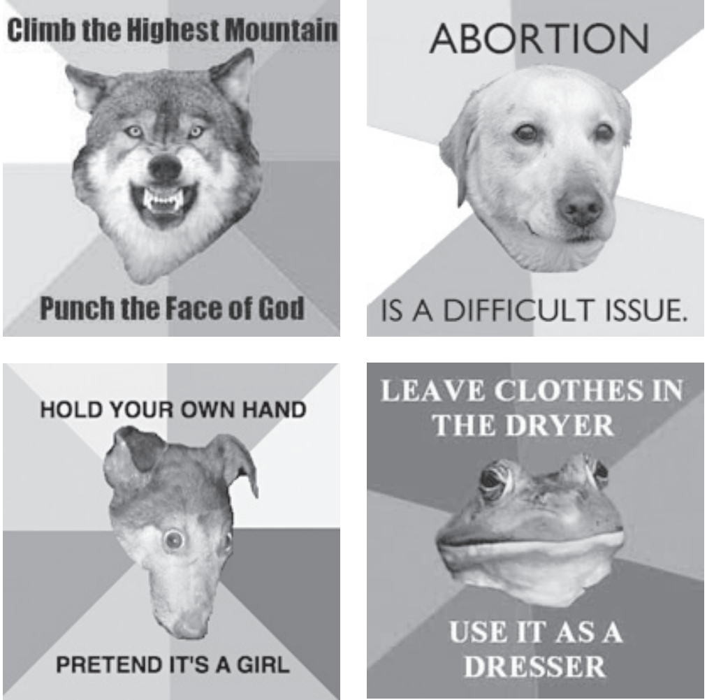
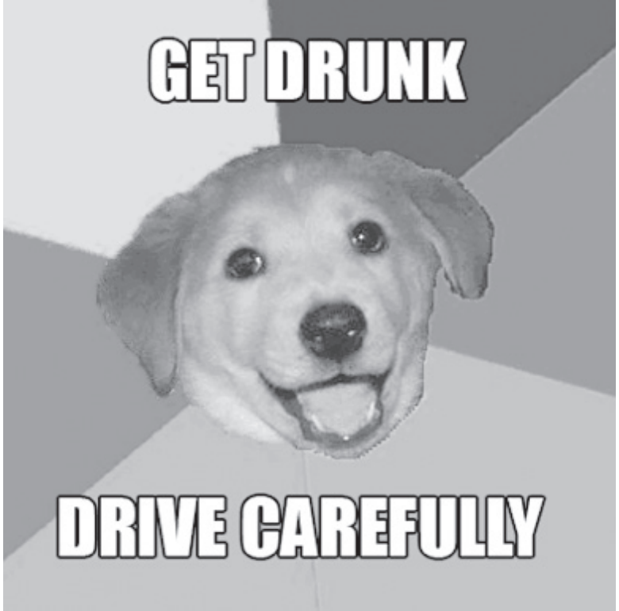

In The Future of the Internet—and How to Stop It, Jonathan Zittrain describes the features of a generative network. A generative network encourages and enables creative production and, as a system, possesses leverage, adaptability, ease of mastery, accessibility, and transferability.1 Notably absent from this list of characteristics, however, is security. Many of the characteristics that make a system generative are precisely the same ones that leave it vulnerable to exploitation. Tis zero-sum game between creativity and security implies a divided Internet. Tose platforms and communities which value security over creativity can be thought of as the “restricted web,” while those that remain generative in the face of other concerns are the “unrestricted web.” Te restricted web has its poster children. Facebook and other social networking sites are growing at incredible speeds. Google and its ever-expanding corral of applications are slowly assimilating solutions to all our computing needs. Amazon and similar search-based commerce sites are creating previously unimagined economies.2 Metaphorically, these sites, and countless others, make up the cities and public works of the restricted web. However, the unrestricted web remains the wilderness all around them, and it is this wilderness that is the native habitat of Internet memes. Te purpose of this essay is twofold. Te frst is to contribute to a framework for discussing so-called Internet memes. Internet memes are popular and recognizable but lack a rigorous descriptive vocabulary. I provide a few terms to aid in their discussion. Te second purpose is to consider Foucault’s “author function” relative to Internet memes, many of which are created and spread anonymously.
What Is an internet Meme?
In 1979 Richard Dawkins published Te Selfsh Gene, in which he discredits the idea that living beings are genetically compelled to behave in ways that are “good for the species.” Dawkins accomplishes this by making one point Te Language of Internet Memes clear: the basic units of genetics are not species, families, or even individuals but rather single genes—unique strands of DNA.3
At the end of the book, Dawkins discusses two areas where evolutionary theory might be heading next. It is here that he coins the term “meme.” He acknowledges that much of human behavior comes not from genes but from culture. He proposes that any nongenetic behavior be labeled as a meme and then poses a question: can the application of genetic logic to memes be productive? To make the diferences between genes and memes clear, I ofer a short example of each.
In Dawkins’s original framing, memes described any cultural idea or behavior. Fashion, language, religion, sports—all of these are memes. Today, though, the term “meme”—or specifcally “Internet meme”—has a new, colloquial meaning. While memes themselves have been the subject of entire books, modern Internet memes lack even an accurate defnition. Tere are numerous online sources (Wikipedia, Urban Dictionary, Know Your Meme, Encyclopedia Dramatica) that describe Internet memes as the public perceives them, but none does so in an academically rigorous way. Given this, I have found the following new defnition to be useful in the consideration of Internet memes specifcally:
An Internet meme is a piece of culture, typically a joke, which gains infuence through online transmission.
While not all Internet memes are jokes, comparing them to ofine jokes makes it clear what makes Internet memes unique: the speed of their transmission and the fdelity of their form.5 A spoken joke, for instance, can only be transmitted as quickly as those individuals who know it can move from place to place, and its form must be preserved by memory. A printed joke, in contrast, can be transmitted by moving paper and can be preserved by a physical arrangement of ink. Te speed of transmission is no longer limited by the movement of individuals, and the form of the joke is preserved by a medium, not memory.
Now, consider a joke that exists on the Internet. Te speed of transmission
is increased yet again, in an incredible way. Space is overcome: computers
connect to one another through far-reaching networks. Time is overcome:
the digitally represented information is available as long as the server
hosting it remains online. A joke stored on a website can be viewed by as
many people as want to view it, as many times as they want to, as quickly as
they can request it.
An online joke’s fdelity of form, however, is subject to a unique contradiction.
Being digital, the joke is perfectly replicable. Copy and paste functions (or their
equivalents) are ubiquitous, expected parts of sofware platforms.6
However, a
piece of digital media in the modern landscape of robust and varied manipulation
sofware renders it also perfectly malleable. Individual sections of a piece of
digital media can be lifed, manipulated, and reapplied with little efort.
Once I say that a piece of media, or a meme, is replicable and malleable, I
must specify what exactly is being copied or changed. A meme can be separated
into components. I propose three: the manifestation, the behavior, and
the ideal.
The manifestation of a meme is its observable, external phenomena. It is
the set of objects created by the meme, the records of its existence. It indicates
any arrangement of physical particles in time and space that are the
direct result of the reality of the meme.
Te behavior of a meme is the action taken by an individual in service of
the meme. Te behavior of the meme creates the manifestation. For instance,
if the behavior is photographing a cat and manipulating that photograph
with sofware, the manifestation this creates is the ordered progression of
pixels subsequently uploaded to the Internet.
Te ideal of a meme is the concept or idea conveyed.7 Te ideal dictates
the behavior, which in turn creates the manifestation. If the manifestation is
a funny image of a cat and the behavior is using sofware to make it, then the
ideal is something like “cats are funny.”
When tracking the spread of a particular meme, it is useful to identify which
of these three aspects is being replicated and which adapted. Dawkins prefgures
this in his original chapter by theorizing that the principal tool for meme
identifcation would be the perception of replication. Tis is important, because
identifying the replication of memes is subjective. Sometimes this identifcation
is easy: one person acts, and another person copies that person exactly.
Other times the process of replication is less exact. Tis is why separating the
manifestation, behavior, and ideal is useful. As long as one of the three components
is passed on, the meme is replicating, even if mutating and adapting.
Current Internet Memes
All memes (offine and on) are capable of existing in layers. For instance, consider language. The meme of language is communication through speech. There are, however, multiple languages. Each individual language is a meme nested within the larger language meme. Additionally, within each individual language there are even more submemes: dialects, slang, jargon. Internet memes follow the same structure. One very common, rather large meme is the image macro. An image macro is a set of stylistic rules for adding text to images. Some image macros involve adding the same text to various images, and others involve adding diferent text to a common image. Just like emoticons, which exist in an environment well suited to supporting their survival, image macros are able to thrive online because the sofware necessary for their creation and distribution is readily available. Tere are countless submemes within the image macro meme, such as LOLcats, FAIL, demotivators. I am going to focus on just one: Advice Dog. Te trope of this meme is that Advice Dog, a friendly looking dog at the center of a rainbow-colored background, is ofering the viewer whatever advice is contained in the text above and below his head. Te formula is simple:
- Image of dog in center of rainbow
- First line of advice
- Second line of advice (usually a punch line)
Iterations of the Advice Dog meme vary not only in the specifc text they
use to communicate humor but also in the type of humor communicated.
When Advice Dog gives someone advice, genuine good advice, it can be
humorous simply by virtue of being attached to a bright background and
smiling dog. Once it is established that the explicit function of Advice Dog is
to give advice, though, having him give bad or unexpected advice is ironic.
Te text can also be transgressive, giving advice that is intentionally ofensive
or absurd, accompanied by text that is not advice at all.
In addition to having Advice Dog ofer various kinds of advice, one can
also have other fgures deliver other kinds of messages. Tese are Advice
Dog–like variants. Whether a “genuine” Advice Dog iteration or a simply an
Advice Dog–like variant, all of these are contained within the larger Advice
Dog meme. Te manifestations are the individual images, among which
numerous replicated elements are obvious. Te style of the background, the
square format of the image, the central placement of a cropped fgure—all
of these remain constant (with consistent variation) from image to image.
Te behavior of the meme is a varied set of practices. Viewing and linking
to various Advice Dog manifestations is part of the meme, as is saving and
reposting the same. Creating original iterations with new text is part of the
meme, as is creating or contributing to any of the Advice Dog–like variants
in the same manner.
The ideal of the Advice Dog meme is harder to describe. Te meaning
conveyed by any single Advice Dog macro can vary wildly. Some have ironic
meanings, while others have aggressive or ofensive meanings. Te subject
can be a dog that gives advice or a child that celebrates success. So we can
say that for Advice Dog, the ideal of the meme is not always replicated from
instance to instance. With no qualities recognizable from iteration to iteration,
it would seem there is no justifcation for linking them together as part
of the same meme. However, what is replicated from instance to instance
is the set of formal characteristics. We are able to identify each instance as
part of the larger Advice Dog meme because of the similarities in form and
regardless of the diferences in meaning.
 


